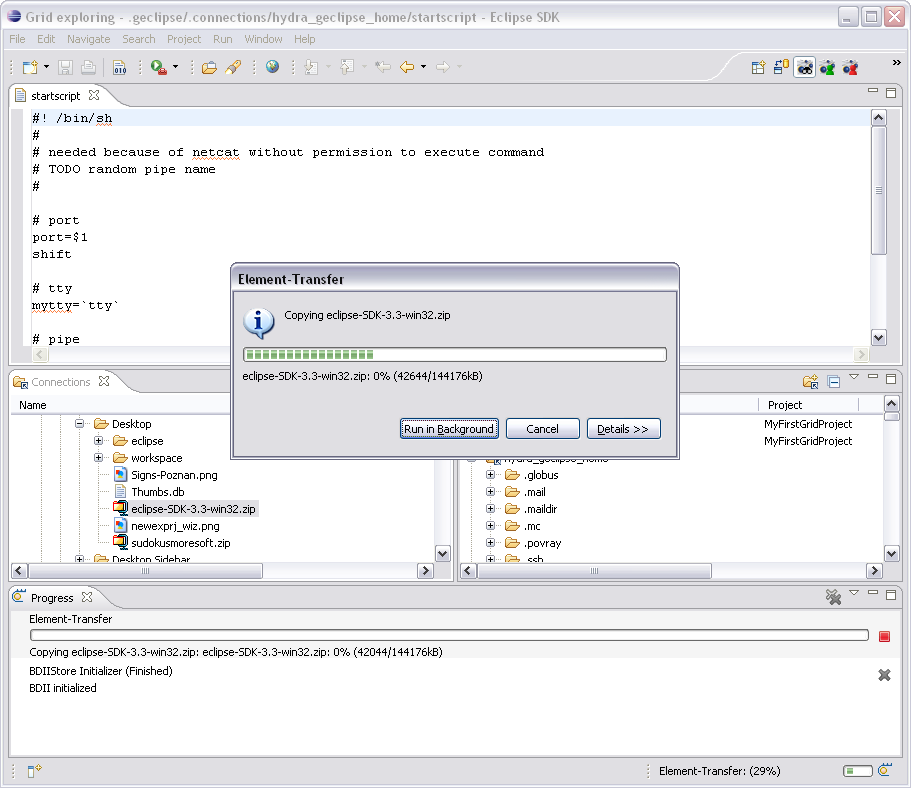

Browsing of remote sites is as simple as browsing a local directory. The only thing that has to be taken into account is that proper remote site browsing is only possible from Grid model views (i.e. Grid project view, connection view ...). Within these views you are able to expand directories and to list their children. As of course g-Eclipse has to connect to the underlying remote machine browsing of such connections is on the one hand much slower than browsing your local file system and may on the other hand need some kind of authentication. If some authentication is needed g-Eclipse will ask you to create a new suitable authentication token and will guide you through the process of creating such a token.
Here is a list of actions that are in principle available for remote files and folders:
The easiest way to browse connections and to transfer data from one connection to another is to use the Grid Exploring Perspective.

This perspective comes with two instances of the connection view that by default are arranged side by side. That makes it very easy to open a connection on one connection view, another connection on the other view and then to drag and drop files from one connection to the other. The progress view at the very bottom of the perspective shows all active file transfers. Furthermore it provides the editor area that may be used to open files, to edit them on the fly and to afterwards save them back.